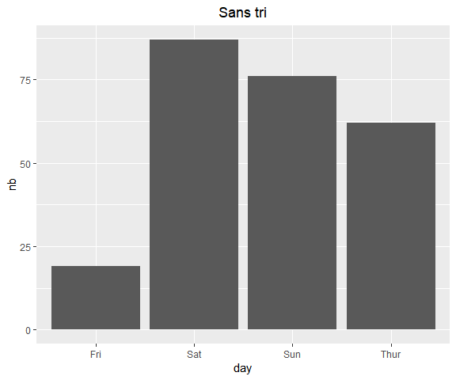
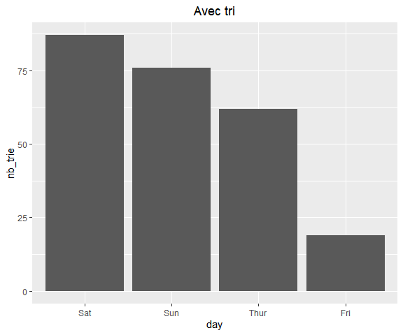
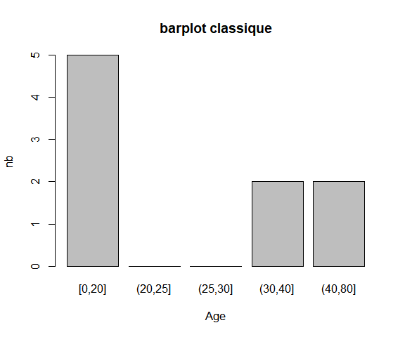
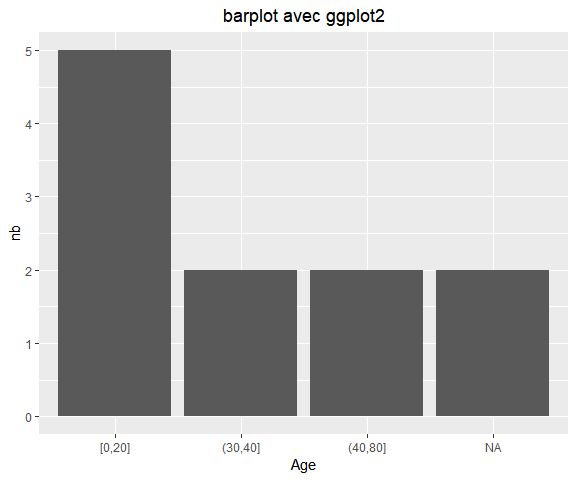

Introduction
Il y a beaucoup d’operations utiles sur les facteurs, que ce soit pour ameliorer le rendu d’un graphique ou d’un tableau, ou lors d’une modelisation pour des raisons plus techniques (modalites rares, valeurs manquantes qui font planter une fonction, …). Le package forcats de Rstudio permet de realiser toutes ces operations facilement, comme le montrent les exemples ci-dessous.
Les donnees pour la suite du code :
library("dplyr")
library("ggplot2")
library("forcats")
# pour recentrer les titres en ggplot2
theme_update(plot.title = element_text(hjust = 0.5))
tips2 = reshape::tips
titanic = titanic::titanic_train[10:20,] %>% select(Pclass, Age, Sex, Survived) %>%
mutate(Survived = factor(Survived),
Age = cut(Age, breaks = c(0, 20, 25, 30, 40, 80),
include.lowest = TRUE))Reordonner les modalites
C’est principalement utile pour la lecture des tableaux et des graphiques.
Les donnees non triees :
tips2 %>% count(day) day n
1 Fri 19
2 Sat 87
3 Sun 76
4 Thur 62On trie par frequence decroissante avec la fonction fct_infreq.
donnees = tips2 %>% count(day, name = "nb")
donnees_tri = tips2 %>% mutate(day = fct_infreq(day)) %>% count(day, name = "nb_trie")ggplot(donnees, aes(day, nb)) + geom_col() +
ggtitle("Sans tri"); ggplot(donnees_tri, aes(day, nb_trie)) + geom_col() + ggtitle("Avec tri")
Cette fois on trie les modalites par la moyenne croissante du champ total_bill avec fct_reorder.
tips2 %>% mutate(day = fct_reorder(day, total_bill, mean)) %>% count(day) day n
1 Fri 19
2 Thur 62
3 Sat 87
4 Sun 76Regroupements de modalites
On peut donner en parametre a la fonction fct_lump le nombre de modalites a conserver, ou la frequence minimale des modalites qu’on veut garder.
Et on peut aussi proceder a un regroupement manuel avec fct_collapse.
# on garde les deux modalites les plus frequentes, les autres sont regroupees
tips2 %>% mutate(day = fct_lump(day, n = 2)) %>% count(day)
# on garde les modalites de frequence >= 30%, les autres sont regroupees
tips2 %>% mutate(day = fct_lump(day, prop = 0.3, other_level = "Autres jours")) %>% count(day)
# regroupement manuel
tips2 %>% mutate(day = fct_collapse(day,
semaine = c("Fri", "Thur"),
weekend = c("Sat", "Sun"))) %>% count(day) day n
1 Sat 87
2 Sun 76
3 Other 81
day n
1 Sat 87
2 Sun 76
3 Autres jours 81
day n
1 semaine 81
2 weekend 163Recodage de modalites
On recode les modalites avec … recode , et on peut changer les donnees manquantes en modalite avec fct_explicit_na.
titanic %>% mutate(cible = recode(Survived, "1" = "oui" , "0" = "non"))
titanic %>% mutate(Age = fct_explicit_na(Age, na_level = "manquant")) Pclass Age Sex Survived cible
10 2 [0,20] female 1 oui
11 3 [0,20] female 1 oui
12 1 (40,80] female 1 oui
13 3 [0,20] male 0 non
14 3 (30,40] male 0 non
15 3 [0,20] female 0 non
16 2 (40,80] female 1 oui
17 3 [0,20] male 0 non
18 2 <NA> male 1 oui
19 3 (30,40] female 0 non
20 3 <NA> female 1 oui
Pclass Age Sex Survived
10 2 [0,20] female 1
11 3 [0,20] female 1
12 1 (40,80] female 1
13 3 [0,20] male 0
14 3 (30,40] male 0
15 3 [0,20] female 0
16 2 (40,80] female 1
17 3 [0,20] male 0
18 2 manquant male 1
19 3 (30,40] female 0
20 3 manquant female 1Remarques
Si on ne declare pas explicitement NA comme une modalite, la fonction barplot de R base ne l’affiche pas (et en plus elle represente les modalites de frequence 0 comme “(20,25]” et “(25,30]” creees par la fonction cut au debut du script R).
Avec ggpglot2 par contre NA est affichee sans meme avoir besoin d’etre declaree comme modalite, et seules les modalites vraiment presentes dans l’echantillon sont conservees dans le graphique.
donnees = titanic %>% count(Age, name = "nb")
barplot(formula = nb ~ Age,
data = donnees,
main = "barplot classique");ggplot(donnees, aes(Age, nb)) +
geom_col() + ggtitle("barplot avec ggplot2")